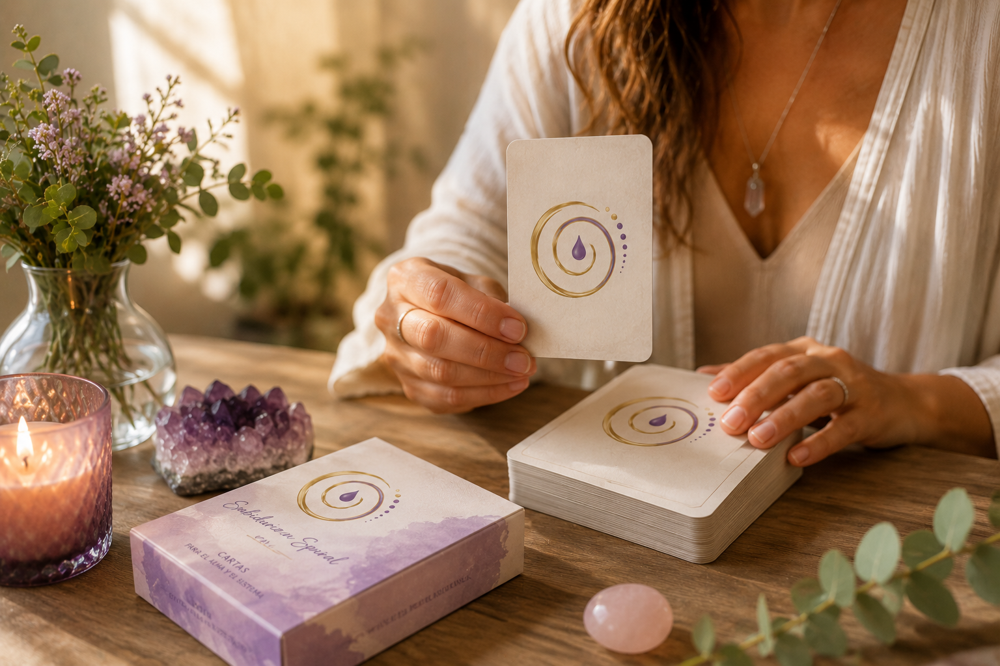
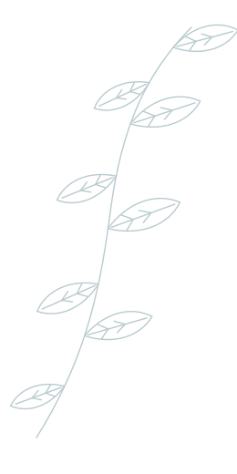
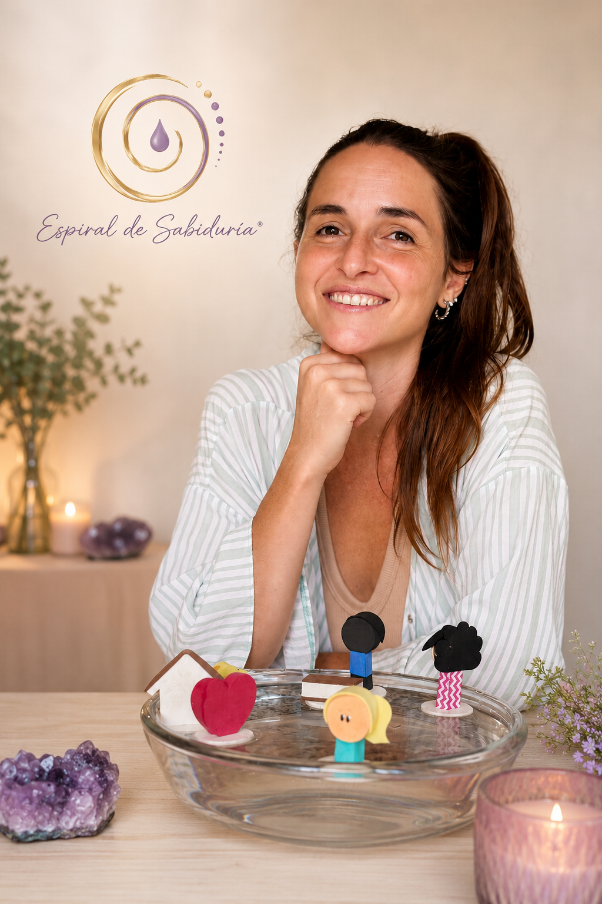

Constelações Familiares na Água
Um processo de consciência sobre a origem dos bloqueios e conflitos, compreendendo dinâmicas familiares e permitindo novas percepções para transformar sua relação consigo mesma e com o mundo.
Saber maisAcompanhamento terapêutico
Um espaço seguro e acolhedor para você se reconectar consigo mesma, ressignificar histórias e dar os próximos passos com mais clareza, leveza e propósito.



Sobre mim
Minha jornada de autoconhecimento começou em 2018, em um momento de profunda transformação na minha vida, quando precisei olhar para dentro e encontrar novos caminhos. Foi a partir dessa experiência que nasceu uma busca por compreender mais sobre mim, sobre o ser humano e sobre os processos de evolução pessoal.
Ao longo desse caminho, encontrei uma nova forma de enxergar a vida e descobri também o meu propósito: acompanhar outras pessoas em suas próprias jornadas de cura, consciência e transformação. Hoje utilizo ferramentas de sabedoria ancestral e terapias que compreendem o ser humano de forma integral — alma, mente, corpo e emoções.
Mais sobre mimCada processo é único. Conheça as abordagens que utilizo para apoiar o seu caminho de cura e autoconhecimento, sempre respeitando o seu ritmo.
Um processo de consciência sobre a origem dos bloqueios e conflitos, compreendendo dinâmicas familiares e permitindo novas percepções para transformar sua relação consigo mesma e com o mundo.
Saber maisEm conexão com seus mestres e guias, essa leitura possibilita acessar mensagens e insights importantes para sua caminhada, trazendo clareza, consciência e direcionamento.
Saber maisUma ferramenta de autoconhecimento que acessa conteúdos do inconsciente, ajudando a compreender bloqueios, acolher processos e encontrar novos caminhos com mais consciência.
Saber maisUma terapia de harmonização energética através da canalização da energia de cura, auxiliando no equilíbrio, relaxamento e apoio em momentos de transformação emocional.
Saber maisUma ferramenta utilizada para harmonização energética, desbloqueios, limpezas e potencialização de projetos, desejos e ambientes, trazendo equilíbrio para diferentes áreas da vida.
Saber maisConstelações Familiares
Uma formação profunda e transformadora para quem deseja aprender a acompanhar processos terapêuticos sistêmicos, integrando ferramentas de escuta, observação e cura no campo familiar.
Ver detalhes e inscriçãoAprender a escutar além das palavras, identificando o que o consultante expressa de forma consciente e inconsciente.
Compreender como vínculos, lealdades invisíveis e histórias familiares influenciam as experiências presentes.
Reconhecer quando uma pessoa está no Estado Criança, Vítima, Juiz ou Adulto, e como acompanhá-la rumo à consciência e responsabilidade pessoal.
Desenvolver uma atitude interna baseada na presença, no respeito e na observação fenomenológica.
Utilizar palavras que facilitam processos de integração, reconhecimento e transformação dentro do sistema familiar.
Incorporar conceitos como Projeto Sentido, Lealdades Invisíveis, Memória Familiar e Ciclos Biológicos Memorizáveis.
Utilizar cartas terapêuticas como recurso complementar em sessões individuais, autoconstelações e processos de acompanhamento.
Metodologia única para observar dinâmicas sistêmicas através do movimento dos elementos na água, ampliando a compreensão do campo e do processo terapêutico.
Conhecer diferentes exercícios e ferramentas para acompanhar processos que vão além da constelação.
Formas de pagamento: PayPal, Wise, Link de pagamento, Prex, Pix.
Tire suas dúvidas antes de iniciar o seu processo terapêutico. Se não encontrar a resposta que procura, fale comigo diretamente.
Não. Você pode entrar em contato diretamente comigo, sem necessidade de indicação médica ou psicológica. Na primeira sessão, conversamos sobre o seu momento e definimos juntas o melhor caminho.
Ofereço as duas modalidades. As sessões online acontecem por videochamada, com a mesma qualidade de presença e acolhimento das sessões presenciais.
Cada processo é único. Geralmente recomendo encontros semanais ou quinzenais no início, ajustando a frequência conforme a sua evolução e necessidades.
É uma abordagem que revela dinâmicas e padrões invisíveis transmitidos entre gerações, ajudando a compreender e transformar conflitos que se repetem na sua história.
Basta preencher o formulário de agendamento abaixo ou enviar uma mensagem pelo WhatsApp. Em poucas horas eu retorno para confirmar o melhor horário para você.
Histórias reais de pessoas que encontraram um novo olhar sobre si mesmas através do acompanhamento terapêutico.
As sessões me ajudaram a compreender padrões que eu repetia há anos sem perceber. Hoje me sinto mais leve, presente e em paz com a minha própria história.